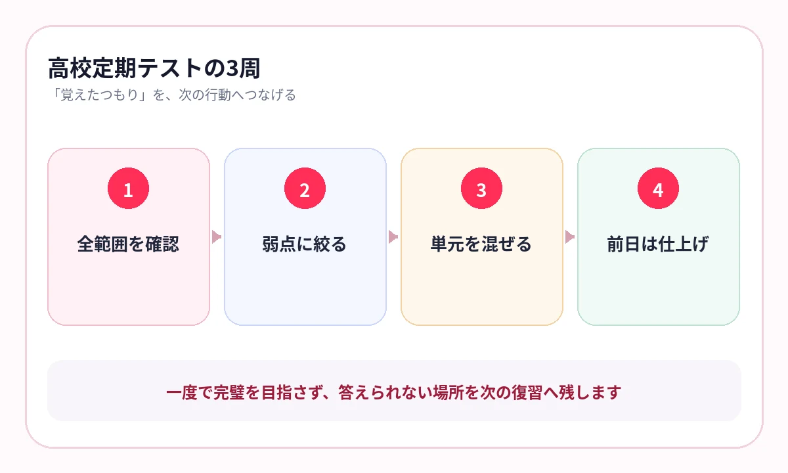

テスト前になると、ノートをきれいにまとめ直すだけで時間がなくなっていませんか？
高校では、教科数が増え、1科目あたりの情報量も多くなります。授業プリント、スライド、PDF、問題集をすべて整理し直してから覚えようとすると、出題練習へ進めません。
まず、今の教材で答えられるかを確認する。答えられない箇所だけを戻る。この順番に変えると、限られたテスト期間を使いやすくなります。
まとめノートは、必要なときだけ作る
まとめ直すこと自体が悪いわけではありません。複数資料をつなぎ、理解を整理するときには有効です。
ただし、すでに要点がまとまったプリントを、同じ形で書き写すだけなら、時間に対する効果は小さくなります。
- 色分けに時間を使う
- 写しただけで答えた気になる
- 完成が遅れ、反復回数が減る
- 全範囲を均等にまとめてしまう
ノートを作る前に、まず答えてください。答えられないところだけを整理します。
知識科目は、レイアウトごと使う
生物の模式図、歴史の年表、地理の統計、公共の制度図は、位置関係にも意味があります。文章だけの単語帳へ直すより、授業資料のレイアウトを残した方が早いことがあります。
生物・地学
名称、働き、過程、図の位置を一緒に確認します。
歴史・地理
時系列、地域差、統計、因果関係を同じページで見ます。
公共・情報
制度、用語、役割、略語を比較して答えます。
{kind=link}

テスト10日前から、範囲を3周する
1周目：確認
全範囲を一度答え、未学習・あやしい・覚えたに分けます。
2周目：弱点
あやしい・覚えていないページだけを、数日に分けて出します。
3周目：仕上げ
科目や単元を混ぜ、手掛かりが少ない状態で答えます。
前日
新しい教材を増やさず、まだ迷うページだけを確認します。
1周目で完璧を目指さないことが大切です。早く全範囲へ触れ、残り時間を弱点に配分します。
横にスワイプして画像を確認できます


先生ごとの出題傾向は、プリントに残る
同じ科目でも、学校や先生によって、用語中心、資料中心、説明中心など出題の比重が変わります。
授業で繰り返された表現、配布された補足資料、小テストで問われた箇所を、次の定期テストへ残してください。
- 小テストで繰り返し出た用語
- 授業で理由まで説明された箇所
- 図表を使って比較した内容
- 過去のテストで同じ形の失点をした単元
市販教材の一般的な重要事項と、授業での重要事項を分けて考えます。
授業資料を、そのまま出題画面へ
AI暗記シートでは、授業プリントやPDFを取り込み、重要語句をマスクして出題できます。マスク量を変えられるため、最初は主要語句、テスト前は細かな語句まで同じ教材で確認できます。
ライブラリでは教材名や認識された文字から検索できるため、科目が増えても必要な単元へ戻れます。
よくある質問
まとめノートは作らない方がよいですか？
理解をつなぐために必要なら作ります。ただし、すでにまとまった資料の書き写しは減らし、先に問題や暗記テストで穴を確認してください。
何科目から始めるのがよいですか？
まずは生物、歴史、地理、公共など、用語や図表の比重が大きい科目から始めると使い方が分かりやすくなります。
前日に全範囲を見直すべきですか？
一度全範囲へ触れているなら、前日は「あやしい」「覚えていない」ページを優先します。
参考情報
試験範囲・制度は公式情報、復習方法は学習科学の研究を参照しています。
清書で終わらず、答える時間を増やす
授業プリントを、そのままテスト対策へ
写真やPDFを取り込み、主要語句からテスト前の細部まで出題。科目ごとの弱点へすぐ戻れます。
iPhone・iPad対応／3枚まで無料保存／継続利用は800円の買い切り